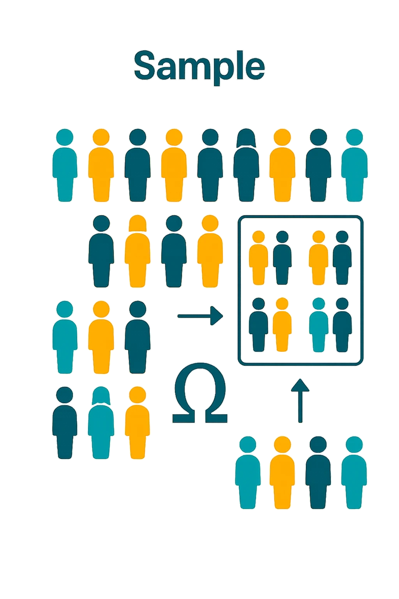
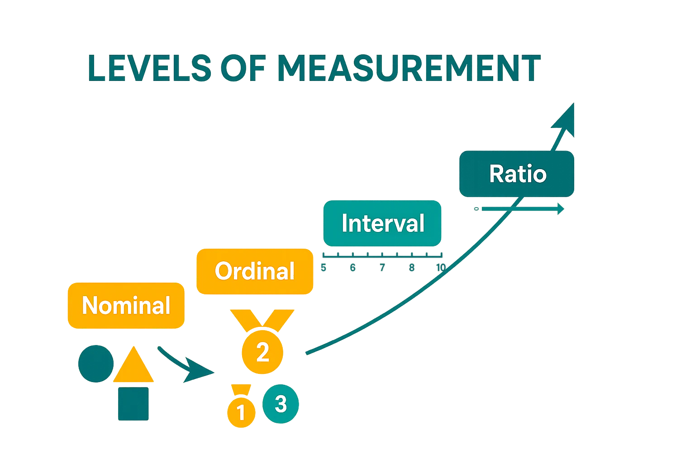
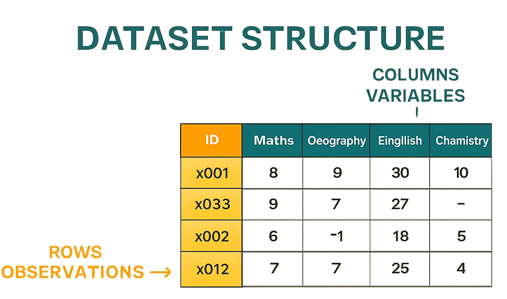
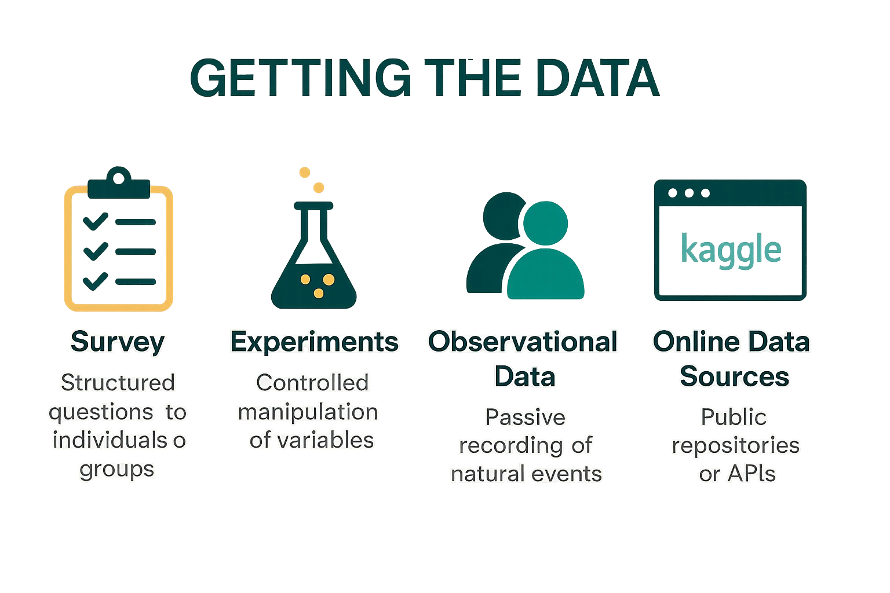
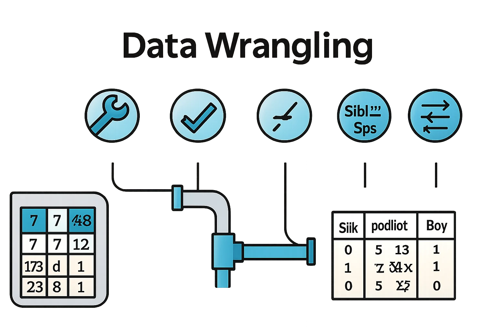
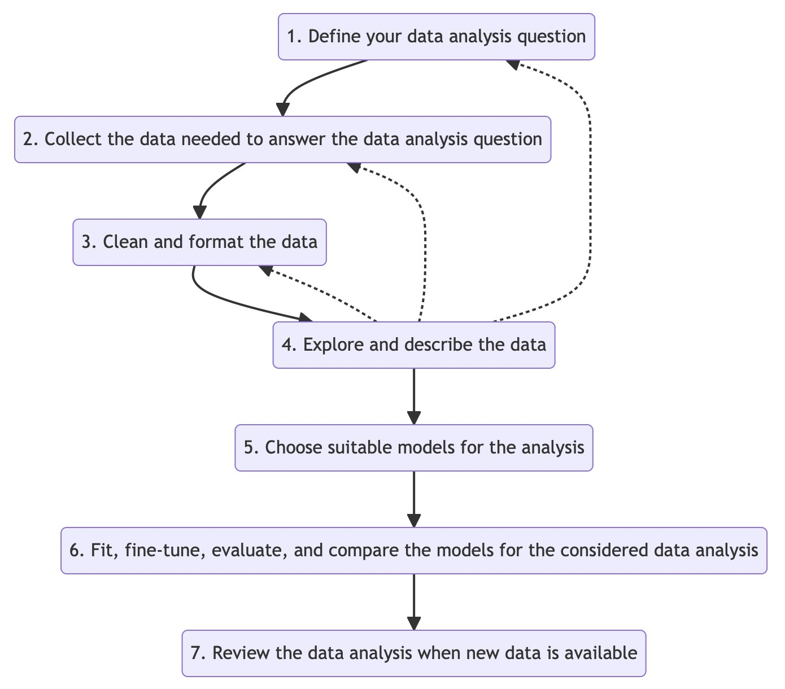

In this lecture, we will begin to see the main definition and foundational concepts in data analysis.
The Four Kinds of Data Analysis
“Analysing data” covers four different activities, which ask different questions, need different methods, and support different conclusions. The course is organised around them, so it is worth naming them now.
Question
Example
Where in the course
Descriptive
What happened?
What was the average fare?
chapters 2–5
Inferential
Does it hold beyond this sample?
Do men and women differ in survival rate?
chapters 6–7
Causal
What made it happen?
Did travelling first class cause survival?
chapter 11
Predictive
What will happen next?
Would this passenger have survived?
chapters 13–20
Two remarks that the rest of the course depends on.
Description and inference are not the same thing. The average fare in your table is a fact about your rows. Whether it says anything about passengers in general depends on how the rows were obtained — which is the subject of chapter 6.
Prediction and explanation are different goals, and they pull in opposite directions. A model that predicts well may be impossible to interpret; a model whose coefficients tell a clean story may predict badly. Block 1 of this course is mostly about explaining, Block 2 mostly about predicting, and knowing which one you are doing is the first decision of any analysis.
Causal analysis sits deliberately between the two: it uses the tools of Block 1, but asks a question neither description nor prediction can answer. A model that predicts a fire from the number of fire engines is a good predictive model and a ridiculous causal one.
What is Data? An informal Definition
We will start by giving an informal definition of data. It is not by any means a complete definition, but it will suffice as a starting point to get an intuitive understanding of what data is:
Data is a set of valuescollected with respect to some variables which describe a given phenomenon.
In the definition above, we mentioned some key concepts, which are discussed in the following sections.
Observations, Populations, Samples
We will see three fundamental concepts: observations, populations, samples.
Observations
When we deal with data, we actually deal with multiple instances of values associated to the same event or phenomenon. Examples:
Example
Comment
We want to study how the heights of students change with the years
We need sets of recorded heights, not just one height
We want to study how a given drug affects the recovering from a disease
We need to record sets of values about drug assumption and recover, just one case will not be enough
We need to create a system which can generate text from a prompt
We need to record several examples of prompt-text generation, just one would not be enough to study how such generation should be made
We will call observations, the units by which we measure data. These could be persons, cars, animals, plants, etc. We often indicate an observation as
\omega
We should consider observation as “abstract” entities, not necessarily numerical observations. E.g., “let’s consider a person \omega”.
Population
When we study a given phenomenon, we will be interested in a set of observations, which is called a “population”. For instance:
if we want to study the distribution of heights of people in the world, we will need to look at the population of all people in the world.
if we want to study the age of people attending a computer science course in Italy, then we need to look at the population of all students of computer science courses in Italy.
Note that a population can sometimes be a theoretical concept and identify sets of elements which are not even finite. E.g., “all movies which will ever be filmed”.
We can denote a population with the symbol \Omega. Al our observations will be
\omega \in \Omega
Sample

In practice, working with population can be very hard, as it is not always possible to obtain observations from those large sets. Intuitively, in practice, working on a large enough set of observations from a population could be good enough. We refer to a subset of a population as “a sample”:
We want to study how the height of people in the world changed in the years. Here:
the population\Omega is the set of people ever existed on earth,
a sample\{\omega^{(1)},\ldots,\omega^{(n)}\} \subseteq \Omega is a subset of people for which we have some data (e.g., say we measured the heights of many people in most countries since the 16th century),
an observation is a person \omega^{(i)}.
Variables (or Features)
We have identified our problem, defined a suitable population and identified a sample of observations. While observations are abstract concepts such as “a person” or “a student”, we usually want to capture specific features of such observations, such as “the person’s age” or “the student’s height”. We collect these features by means of statistical variables.
Statistical variables are concept similar to that of mathematical of programming variables, in that they can be seen as sorts of “containers for the data”.
We may also be interested in different features of an observation. For instance, for each person in a population, we may want to record their age, gender, and height. We can introduce a variable to capture each of these features. For instance, given observation \omega, we may obtain “height = 180cm”, “weight=80Kg”, “gender=male”.
Formally, we’ll define a variable X as:
X : \Omega \to S \omega \mapsto x
Where S is the set of possible values for variable X. The definition above specifies that a variable maps an abstract observation \omega to some (possibly more concrete) value x \in S.
Note: we use a capital letter X to denote the variable, while a lowercase letter x to represent the value assumed by the variable. For instance, we could write X=x \in S.
The concept of variable is often used interchangeably with the term feature, which is more used in the Machine Learning community and jargon. This is because a variable capture a specific “feature” or “characteristic” of each observation. For instance, the variable “height” capture the height feature of a person.
Example
Given the population of all people currently living in the world \Omega, we define a variable H to collect the heights of the observed people \omega:
H : \Omega \to \mathbb{R} \omega \mapsto h
Given an observation \omega^{(1)}, we may obtain H(\omega)=180. We often say that H assumes the value 180 and write: H=180.
Quantitative and Qualitative Variables
Variables can be of two main kinds:
Qualitative: represent properties that can be observed and cannot generally be measured with a numerical value (e.g., ‘color’, ‘sex’);
Quantitative: represent properties that can be quantified with a number (e.g., ‘height’, ‘weight’, ‘age’).
Discrete and Continuous Variables
Variables can also be discrete or continues:
Discrete variables can assume a finite number (or a countable infinite number) of possible values. Binary variables are a special case of discrete variables which can take only two possible values (0 and 1).
Continuous variable assume a continuous, infinite number of values, which can be generally denoted with real numbers
Variables which take numerical values are generally called also “numeric” variables.
Scalar and Multi-Dimensional Variables
Variables can be:
scalar, uni-dimensional or uni-variate: they assume real numbers (e.g., X=1)
multi-dimensional or multi-variate: they assume vector or matrix values, (e.g., X = \binom{1}{3}, or X = \begin{pmatrix}
1 & 2 \\
3 & 4 \\
\end{pmatrix}).
Examples
Let’s see some examples:
Discrete Scalar Variables
We want to assess if a coin is fair or not.
We consider as population all possible tosses of that coin.
An observation will be a specific tossing.
A discrete scalar variable X may record the outcome of a given tossing. The set of possible values will be S=\{head,\ tail\} (discrete values). The variable is scalar as it will contain a single value.
If we toss a coin, we may get X=tail.
Continuous Scalar Variables
We want to study the heights in centimeters of students in this class.
Our population is the set of all students in this class.
We can use a continuous scalar variable X to record the heights of the students. In this case, we can choose S=\mathbb{R}_+.
If we pick a student, we may get X=175.
Continuous Multi-Dimensional Variables
We want to study the positions of all cars in the world.
Our population is the set of all cars in the world.
We could use the variable X to denote the latitude and longitude coordinates of a car in the world. The set of possible values may be S=\mathbb{R}^2.
Once we pick a car, we may have X = \binom{37}{15}.
Scales

When working with variables, it’s important to understand whether their values can be meaningfully ordered. This is captured by the concept of measurement scales:
Nominal scale: values cannot be ordered.
Examples: gender, eye color, car manufacturer. We cannot say that “green > brown”.
Ordinal scale: values can be ordered, but differences are not meaningful.
Example: levels of expertise (novice, amateur, intermediate, expert). We can say “novice < amateur”, but “amateur - novice” is usually different than “intermediate - amateur”.
Interval scale: values can be ordered, and differences are meaningful,
but there is no true zero denoting the absence of the quantity.
Example: temperature in Celsius or Fahrenheit. We can say 25° - 15° = 32°-22°, but 0° does not denote that “there is no temperature”.
Ratio scale: values can be ordered, differences are meaningful, and there is a true zero.
Examples: height, weight, age, income. 0cm or 0Kg denotes the absence of the quantity, plus differences are meaningful and ordering is possible.
Data Sets, Design Matrix, and Missing Values

A set of data related to a specific phenomenon is called a “dataset”. Datasets are usually stored in tables in which columns represent the different variables and rows represent the different observations. If you have ever had a look at a spreadsheet, you probably already saw an example of a dataset!
Let’s consider the following example of a dataset of marks of 5 subjects obtained by three students:
ID
Maths
Geography
English
Physics
Chemistry
x001
8
9
30
8
10
x038
9
7
27
6
x002
6
-1
18
5
6
x012
7
7
25
4
10
x042
10
10
30
10
10
We can find the different elements that we discussed about in this table:
Observations: each row of the table is an observation;
Variables: each column of a table is a different table, mapping an observation to a numerical value. In the example, above the variable ID is qualitative, while all others are quantitative, discrete, and ratio scale (they have a true zero);
Features: same as variables, each column is a “feature” or a characteristic of each observation;
Samples and Populations: the dataset can be seen as a sample (a subset of students) of a wider population (e.g., all students in the school);
This kind of matrix is also called design matrix.
Note that, due to the way the data was collected, one value is not there. We call these values missing data. These may be due to errors in the way we collected and stored our data or due to specific phenomena. For instance, in this case, the student may have not taken yet the test for that specific subject. We will see later how to deal with missing data.
Before moving on, think for a moment what you could do with a dataset like this (maybe imagine a larger one):
You could take the average of all marks obtained by a student (average by rows) to get a ranking of the students. This could be useful to understand which students may need help.
You could compute the average of the votes obtained in each course (average by column) to identify the subjects which are “more difficult” for the students than others.
You could group the courses into humanity-based and science-based to identify which students excel in each field.
The examples above are all (very simple) examples of data analysis. As you can see, even with a simple dataset like this and no knowledge of complex notions of data analysis, we can already do a lot of analysis.
The “table” structure containing a dataset is often called a data matrix or a design matrix. In this format, each column of the matrix represents a variable, which is often also referred to as a feature, while each row is a different observation.
Getting the Data

Data collection is the essential first step in any data analysis workflow. It involves gathering observations that will serve as the foundation for modeling, visualization, and interpretation. The method you choose depends on your goals, the type of data needed, and the resources available.
Surveys
Surveys are structured tools used to collect information from individuals or groups. They typically involve asking predefined questions and are ideal for capturing opinions, preferences, demographics, or behavioral patterns.
Common formats:
Online forms
Paper questionnaires
Phone or in-person interviews
Example:
A university wants to understand students’ satisfaction with online courses. It distributes a digital survey asking students to rate their experience across different dimensions (e.g., content clarity, platform usability, instructor engagement).
Key features:
Standardized questions
Scalable across large populations
Quantifiable and analyzable responses
Experiments
Experiments allow researchers to collect data in a controlled environment, often to test causal relationships between variables. By manipulating one or more independent variables and observing the outcome, experiments can provide strong evidence for cause-and-effect.
Most common type:
Randomized Controlled Trials (RCTs)
Example:
To evaluate the effectiveness of a new drug, researchers randomly assign participants to two groups: one receives the drug, the other a placebo. Recovery rates are compared to assess the drug’s impact.
Key features:
Controlled manipulation of variables
Random assignment to reduce bias
Replicable design for hypothesis testing
Observational Data
Observational methods involve recording data as it naturally occurs, without intervention. This approach is useful when experiments are impractical, unethical, or too costly.
Example:
A public health researcher studies the impact of air pollution on respiratory health by analyzing hospital admission records and pollution levels across different cities.
Key features:
No manipulation of variables
Captures real-world behavior
Suitable for exploratory and correlational analysis
Online Data Sources
In modern data science, many projects begin by retrieving data from online platforms and public repositories. These sources offer ready-to-use datasets for exploration, benchmarking, and model development.
Example:
A student downloads a Kaggle dataset of movie reviews to train a sentiment analysis model using natural language processing.
Key features:
Fast access to diverse datasets
Often pre-cleaned and well-documented
Ideal for prototyping and learning
Data Loading in Python
We will now put our hands on a real dataset. We will consider the Titanic dataset, which is a popular dataset used in data science education and competitions. It contains information about passengers aboard the Titanic and whether they survived the disaster.
This dataset is particularly useful for practicing data cleaning, exploratory data analysis, and predictive modeling. It includes both qualitative and quantitative variables, and offers a rich context for discussing missing data, bias, and causal inference.
In the Titanic dataset, each row represents a passenger, and each column represents a variable describing that passenger. Common variables include:
PassengerId: Unique identifier for each passenger
Survived: Whether the passenger survived (0 = No, 1 = Yes)
Pclass: Ticket class (1st, 2nd, or 3rd)
Name: Full name of the passenger
Sex: Gender
Age: Age in years
SibSp: Number of siblings/spouses aboard
Parch: Number of parents/children aboard
Ticket: Ticket number
Fare: Price paid for the ticket
Cabin: Cabin number (often missing)
Embarked: Port of embarkation (C = Cherbourg, Q = Queenstown, S = Southampton)
The dataset is a good didactic example. Indeed:
It mixes categorical and numerical data
It contains missing values, which are common in real-world datasets
It allows us to explore correlations and build classification models
It’s historically grounded, making it easier to interpret and explain
In the next steps, we will:
Load the dataset and inspect its structure
Clean the data by handling missing values and inconsistencies
Explore the variables using summary statistics and visualizations
Build a simple model to predict survival based on selected features
We will start by loading the dataset using the Pandas library in Python. We will use a csv version of the dataset, originally published at https://raw.githubusercontent.com/agconti/kaggle-titanic/master/data/train.csv and served by this site at https://antoninofurnari.github.io/fad-2627/data/titanic.csv — which is the copy the code below actually reads, so the same code runs here, on a local clone and on Colab.
The data is in CSV format, meaning Comma-Separated Values. This is a plain text format where each line represents a row in the dataset, and each value (or cell) is separated by a comma.
CSV files are widely used because they are:
Simple to read and write
Compatible with spreadsheet software like Excel or Google Sheets
Easily imported into programming environments like Python (e.g., using pandas.read_csv())
Here’s a small example of how a CSV file might look (first line of the dataset):
PassengerId,Survived,Pclass,Name,Sex,Age,SibSp,Parch,Ticket,Fare,Cabin,Embarked
1,0,3,"Braund, Mr. Owen Harris",male,22,1,0,A/5 21171,7.25,,S
2,1,1,"Cumings, Mrs. John Bradley (Florence Briggs Thayer)",female,38,1,0,PC 17599,71.2833,C85,C
3,1,3,"Heikkinen, Miss. Laina",female,26,0,0,STON/O2. 3101282,7.925,,S
4,1,1,"Futrelle, Mrs. Jacques Heath (Lily May Peel)",female,35,1,0,113803,53.1,C123,S
5,0,3,"Allen, Mr. William Henry",male,35,0,0,373450,8.05,,S
Note that Pandas can also read other formats, such as tab separated values file and Excel files.
Let’s load and visualize the data:
import pandas as pdtitanic = pd.read_csv(DATA +"titanic.csv", index_col='PassengerId')titanic
Survived
Pclass
Name
Sex
Age
SibSp
Parch
Ticket
Fare
Cabin
Embarked
PassengerId
1
0
3
Braund, Mr. Owen Harris
male
22.0
1
0
A/5 21171
7.2500
NaN
S
2
1
1
Cumings, Mrs. John Bradley (Florence Briggs Th...
female
38.0
1
0
PC 17599
71.2833
C85
C
3
1
3
Heikkinen, Miss. Laina
female
26.0
0
0
STON/O2. 3101282
7.9250
NaN
S
4
1
1
Futrelle, Mrs. Jacques Heath (Lily May Peel)
female
35.0
1
0
113803
53.1000
C123
S
5
0
3
Allen, Mr. William Henry
male
35.0
0
0
373450
8.0500
NaN
S
...
...
...
...
...
...
...
...
...
...
...
...
887
0
2
Montvila, Rev. Juozas
male
27.0
0
0
211536
13.0000
NaN
S
888
1
1
Graham, Miss. Margaret Edith
female
19.0
0
0
112053
30.0000
B42
S
889
0
3
Johnston, Miss. Catherine Helen "Carrie"
female
NaN
1
2
W./C. 6607
23.4500
NaN
S
890
1
1
Behr, Mr. Karl Howell
male
26.0
0
0
111369
30.0000
C148
C
891
0
3
Dooley, Mr. Patrick
male
32.0
0
0
370376
7.7500
NaN
Q
891 rows × 11 columns
As you can see, the visualization has been truncated, removing some rows, as the dataset is big. Another way to visualize such big dataset is to use the .head() method, optionally specifying a number of rows to be shown (5 by default):
titanic.head()
Survived
Pclass
Name
Sex
Age
SibSp
Parch
Ticket
Fare
Cabin
Embarked
PassengerId
1
0
3
Braund, Mr. Owen Harris
male
22.0
1
0
A/5 21171
7.2500
NaN
S
2
1
1
Cumings, Mrs. John Bradley (Florence Briggs Th...
female
38.0
1
0
PC 17599
71.2833
C85
C
3
1
3
Heikkinen, Miss. Laina
female
26.0
0
0
STON/O2. 3101282
7.9250
NaN
S
4
1
1
Futrelle, Mrs. Jacques Heath (Lily May Peel)
female
35.0
1
0
113803
53.1000
C123
S
5
0
3
Allen, Mr. William Henry
male
35.0
0
0
373450
8.0500
NaN
S
The dataset shows different observations related to the passengers of the Titanic. We can see each row of this matrix as a multi-dimensional variable (a vector) summarizing the main properties of the observations. Indeed, in the example above, each passenger is a different observation, while the different column are the different features.
The NaN values denote missing data.
With this data in front of us, let’s try to answer these questions:
How many observations are there?
How many variables are there?
Which variables are qualitative?
Which variables are quantitative?
Which variables are discrete?
Which variables are continuous?
What are the scales of each variable?
To make our life easier answering those questions, we can use the .info() method of the Pandas dataframe:
This table shows some features of each column, including the name, the number of non-null (non missing) data and the type of the column.
In this dataset, each observation is identified by the PassengerId variable, which is a qualitative discrete variable. This act as an “index” of the dataset, which is also called a “DataFrame” in Pandas. We can verify this as follows:
We can select a single observation using this notation:
titanic.loc[101]
Survived 0
Pclass 3
Name Petranec, Miss. Matilda
Sex female
Age 28.0
SibSp 0
Parch 0
Ticket 349245
Fare 7.8958
Cabin NaN
Embarked S
Name: 101, dtype: object
A row of a DataFrame is a Pandas Series, which is a one-dimensional array-like object. Each element of the Series corresponds to a column in the DataFrame, and the index of the Series corresponds to the column names.
As we can see, the observation contains different “features” or variable values, such as the Name, Sex, Age etc. of the passenger. The property “Name” of the Series denotes the value of the index. We can access a given feature as follows:
titanic.loc[101]['Name']
'Petranec, Miss. Matilda'
Note that we can discard the index and just take the i-th element in order with the following notation:
titanic.iloc[101]
Survived 0
Pclass 3
Name Petroff, Mr. Pastcho ("Pentcho")
Sex male
Age NaN
SibSp 0
Parch 0
Ticket 349215
Fare 7.8958
Cabin NaN
Embarked S
Name: 102, dtype: object
As we can see, this returned a different observation (the one with id/Name equal to 102).
We can extract a given column from the dataset using this notation:
This is still a Pandas series, but this time it represents an uni-variate sample.
Data Wrangling (or Data Munging)

Data never comes perfectly clean or ready to use. Real-world datasets often contain missing values, inconsistent formats, outliers, or irrelevant information. Data wrangling is the process of transforming raw data into a structured and usable format—preparing it for analysis or modeling. This may involve tasks such as renaming columns, converting data types, handling null values, filtering rows, or creating new features. Good wrangling is essential: it ensures that the insights we extract are based on reliable, well-organized information.
Data wrangling is an unstructured and varied process. We will get back on it multiple times, but here are the main concepts which is good to know:
Handling Missing Values
Real-world datasets often contain missing entries. These can appear as empty cells, NaN, or placeholders like ?.
Titanic example:
The Age and Cabin columns contain missing values.
We can choose to:
Remove rows with missing data (dropna)
Fill them with a default or statistical value (fillna)
Flag them as missing and treat them separately
For instance, we can obtain a dataset free of NaN values as follows:
The dataset is now super-clean, but also very smaller (183 rows vs 891!). This is due to the fact that we removed all rows containing at least one missing value. This is often not a good idea, as we may loose a lot of data.
If we are working with a specific variable, we may want to first select it, then remove missing values. For example:
We now have 891 entries and no missing data. The process of filling in missing data is also called data imputation.
We can also mix the different strategies depending on the variables. For instance, replacing ages with the mean age may make sense, but we cannot do the same with Cabin. Let’s see an example to get rid of missing value with a mix of techniques:
titanic2 = titanic.copy() # to avoid modifying the original datasettitanic2['Age'] = titanic2['Age'].fillna(titanic2['Age'].mean())titanic2['Cabin'] = titanic2['Cabin'].fillna('Unknown')titanic2.info()
In practice, we filled age with the mean value, but marked all missing Cabin with “Unknown”.
Converting Data Types
Sometimes we need to convert columns to the correct type—especially when reading from CSV files.
Titanic example:
Convert Pclass from integer to categorical using astype('category').
Let’s first inspect the type of the Pclass variable. This can be done with info, but also with dtype as follows:
titanic2['Pclass'].dtype
dtype('int64')
While we have an integer value, this represents the class of passengers, so it probably contains only few unique values. Let’s check this by seeing the unique values of the column (without duplicates):
titanic2['Pclass'].unique()
array([3, 1, 2])
It does make sense to convert this to a categorical variable (a nominal variable). Let’s do it as follows:
Besides this, we can also select a subset of variables as follows:
titanic2[['Age', 'Cabin', 'Fare']].head()
Age
Cabin
Fare
PassengerId
1
22.0
Unknown
7.2500
2
38.0
C85
71.2833
3
26.0
Unknown
7.9250
4
35.0
C123
53.1000
5
35.0
Unknown
8.0500
Long vs Wide Formats
Data can be organized in different formats depending on the goals of the analysis. Understanding these formats helps us reshape and prepare data effectively for modeling, visualization, or statistical testing.
Wide Format
Each variable has its own column
Each observation is a single row
Advantages: Easy to read, intuitive structure, compatible with most analysis tools
Use cases: Statistical modeling, machine learning, spreadsheet-style inspection
Example:
A dataset where each row is a student and each column is a subject score.
Wide Format:
Student Math Science English
0 Alice 85 88 92
1 Bob 92 85 88
2 Charlie 78 92 85
Long Format
Variables are stacked into fewer columns
Each observation may span multiple rows
Advantages: More compact, flexible for grouping and plotting
Use cases: Time series, repeated measures, tidy data workflows, faceted plots
Example:
Instead of one row per student, we have one row per student–subject pair, with columns like StudentID, Subject, and Score.
Most of the time, especially in introductory analysis and machine learning, we’ll encounter datasets in wide format. However, certain tasks—like time-based analysis or grouped visualizations—may require us to reshape the data into long format. We’ll revisit these concepts and apply them later when working with real datasets.
Long Format:
Student Subject Score
0 Alice Math 85
1 Bob Math 92
2 Charlie Math 78
3 Alice Science 88
4 Bob Science 85
5 Charlie Science 92
6 Alice English 92
7 Bob English 88
8 Charlie English 85
Conversion across formats can be done as follows:
# Example: Wide vs Long format# Create sample data in wide formatwide_data = pd.DataFrame({'Student': ['Alice', 'Bob', 'Charlie'],'Math': [85, 92, 78],'Science': [88, 85, 92],'English': [92, 88, 85]})print("Wide Format:")print(wide_data)# Convert to long formatlong_data = pd.melt(wide_data, id_vars=['Student'], var_name='Subject', value_name='Score')print("\nLong Format:")print(long_data)# Convert back to wide formatwide_again = long_data.pivot(index='Student', columns='Subject', values='Score')print("\nBack to Wide Format:")print(wide_again)
Wide Format:
Student Math Science English
0 Alice 85 88 92
1 Bob 92 85 88
2 Charlie 78 92 85
Long Format:
Student Subject Score
0 Alice Math 85
1 Bob Math 92
2 Charlie Math 78
3 Alice Science 88
4 Bob Science 85
5 Charlie Science 92
6 Alice English 92
7 Bob English 88
8 Charlie English 85
Back to Wide Format:
Subject English Math Science
Student
Alice 92 85 88
Bob 88 92 85
Charlie 85 78 92
These are some of the techniques used in data wrangling. In practice, depending on the kind of analysis, we may perform different operations, such as:
Converting units of measurement (e.g., from inches to centimeters, or Fahrenheit to Celsius)
Merging different tables (e.g., using a join operation like in SQL to combine passenger data with ticket prices)
Parsing and extracting information from strings (e.g., splitting full names into first and last names)
Normalizing or scaling values (e.g., rescaling age or fare to a 0–1 range for modeling)
Binning continuous variables into categories (e.g., grouping ages into child, adult, senior)
Removing duplicates or irrelevant columns
Filtering outliers or suspicious values (e.g., negative ages or fares)
Reshaping data between wide and long formats depending on the analysis or visualization needs
We’ll revisit many of these techniques and apply them to real datasets as we move forward. For now, it’s important to understand that data wrangling is not a fixed recipe—it’s a flexible toolbox that adapts to the structure and goals of each project.
The Data Analysis Workflow
Now that we’ve seen the main concepts, terminology, and tools involved in working with data, we can introduce a broader perspective: the data analysis workflow. This is the structured process that guides how we move from raw data to insights, decisions, and predictions.
Let’s begin with a working definition, adapted from Wikipedia:
Data analysis is the process of inspecting, cleaning, transforming, and modeling data with the goal of discovering useful information, informing conclusions, and supporting decision-making.
While this definition is informal, it provides a useful starting point. In the sections below, we’ll unpack its key components and introduce the main types and goals of data analysis.
Data Analysis as a Process
The definition above emphasizes that data analysis is a process—not a single algorithm or technique, but a sequence of steps that combine statistical reasoning, domain knowledge, and computational tools. These steps often include:
Inspecting: Assessing the structure and content of the dataset—number of rows and columns, types of variables, typical values, and potential anomalies. For example, in a dataset of student marks, we might expect scores to range from 0 to 10.
Cleaning: Correcting or removing problematic data entries. This could involve handling missing values, removing duplicates, or filtering out invalid entries (e.g., negative marks or scores above the maximum).
Transforming: Modifying the data to make it more suitable for analysis. This might include creating new columns (e.g., a mean score per student), rescaling variables, or converting formats (e.g., dividing English scores out of 30 by 3 to match other subjects scored out of 10).
Modeling: Applying statistical or machine learning models to summarize, explain, or predict aspects of the data. A model can help us understand relationships between variables—for instance, predicting English scores based on performance in other subjects.
The Typical Workflow
A standard data analysis workflow includes the following stages:
Define your data analysis question
Collect the data needed to answer that question
Clean and format the data
Explore and describe the data
Choose suitable models for the analysis
Fit, fine-tune, evaluate, and compare the models
Review and update the analysis as new data becomes available
A Non-Linear Process
Although the workflow is presented as a sequence, real-world data analysis is rarely linear. Analysts often revisit earlier steps based on what they learn along the way. For example:
After exploring the data (step 4), you might discover outliers and return to cleaning (step 3)
You might realize that your initial question (step 1) needs refinement
You might need additional data (step 2) to improve your model
The diagram below illustrates this flexible structure. Solid arrows show the main flow, while dashed arrows indicate possible backward steps—especially after exploration.

Example: Analyzing Customer Reviews
Let’s walk through a practical example. A data analyst at an e-commerce company is tasked with improving product quality and customer satisfaction by analyzing customer reviews.
Step 1: Define the question: “What are the common themes and issues in customer reviews?”
Step 2: Collect reviews from the company website, social media, and third-party platforms
Step 3: Clean the data—remove duplicates, correct spelling, standardize formatting
Step 4: Explore the data—use word clouds, sentiment analysis, and frequency counts
Step 6: Evaluate the model—realize that topics are overlapping and unclear
Step 4 (again): Re-explore the data—identify that product and service issues are mixed
Step 5 (again): Separate reviews into categories and reapply topic modeling
Step 6: Obtain clearer topics like “defective products” and “responsive support”
Step 7: Commit to ongoing review as new reviews come in
This iterative approach allows the analyst to refine insights and adapt strategies over time.
This workflow will guide our journey through the course. As we move forward, we’ll apply each step to real datasets, starting with the Titanic dataset and expanding to more complex scenarios.
Exercises
Population and sample. For each, name the population, the sample and the unit of observation: (a) an exit poll on election day; (b) the server logs of a web shop for one month; (c) a clinical trial of a new drug. Which of the three lets you generalise, and to what?
Variable types. Classify every column of the Titanic dataset as nominal, ordinal, discrete or continuous. Two of them are genuinely debatable — say which, and why the choice matters for the analysis.
Loading and inspecting. Load the Titanic data and answer, with code: how many rows and columns? Which columns have missing values, and how many? What is the data type of each column, and is it the type you would expect?
Missing is information.Cabin is missing for most passengers. Is it missing at random? Compare the survival rate of passengers with and without a recorded cabin, and say what the comparison suggests about why the value is missing.
Which kind of analysis? For each question, say whether it is descriptive, inferential, predictive or causal: (a) what was the average fare? (b) do men and women differ in survival rate? (c) would this passenger have survived? (d) did travelling in first class cause a higher chance of survival?
References
Chapter 1 of Heumann, Christian, and Michael Schomaker Shalabh. Introduction to statistics and data analysis. Springer International Publishing Switzerland, 2016.
Source Code
---title: "Key concepts, loading and inspecting the data"stem: 01_key_conceptschapter: 1format: html: code-tools: true ipynb: default---::: {.callout-tip icon=false}## Chapter resources[Slides (PDF)](../files/slides/01_key_concepts.pdf){.btn .btn-sm .btn-primary}[Open in Colab](https://colab.research.google.com/github/antoninofurnari/fad-2627/blob/main/notes/01_key_concepts.ipynb){.btn .btn-sm .btn-outline-primary}[Download PDF](../files/chapters/01_key_concepts.pdf){.btn .btn-sm .btn-outline-primary .btn-chapter-pdf}[Practice quiz](../quiz.html?bank=01){.btn .btn-sm .btn-outline-primary}:::```{python}#| echo: false# Datasets are served by the site itself, so the same code runs here, on a# local clone and on Colab. See site/data/MANIFEST.yml.from pathlib import PathDATA ="../data/"if Path("../data").is_dir() else"https://antoninofurnari.github.io/fad-2627/data/"```In this lecture, we will begin to see the main definition and foundational concepts in data analysis.## The Four Kinds of Data Analysis"Analysing data" covers four different activities, which ask different questions, needdifferent methods, and support different conclusions. The course is organised aroundthem, so it is worth naming them now.|| Question | Example | Where in the course ||:---|:---|:---|:---|| **Descriptive** | What happened? | What was the average fare? | chapters 2–5 || **Inferential** | Does it hold beyond this sample? | Do men and women differ in survival rate? | chapters 6–7 || **Causal** | What made it happen? | Did travelling first class *cause* survival? | chapter 11 || **Predictive** | What will happen next? | Would *this* passenger have survived? | chapters 13–20 |Two remarks that the rest of the course depends on.**Description and inference are not the same thing.** The average fare in your table is afact about your rows. Whether it says anything about passengers in general depends on howthe rows were obtained — which is the subject of chapter 6.**Prediction and explanation are different goals, and they pull in opposite directions.**A model that predicts well may be impossible to interpret; a model whose coefficients tella clean story may predict badly. Block 1 of this course is mostly about explaining, Block2 mostly about predicting, and knowing which one you are doing is the first decision ofany analysis.Causal analysis sits deliberately between the two: it uses the tools of Block 1, but asksa question neither description nor prediction can answer. A model that predicts a firefrom the number of fire engines is a good predictive model and a ridiculous causal one.## What is Data? An informal DefinitionWe will start by giving an informal definition of data. It is not by any means a complete definition, but it will suffice as a starting point to get an intuitive understanding of what data is:>Data is a **set of values** **collected** with respect to some **variables** which describe a given **phenomenon**.In the definition above, we mentioned some key concepts, which are discussed in the following sections.## Observations, Populations, SamplesWe will see three fundamental concepts: observations, populations, samples.### ObservationsWhen we deal with data, we actually deal with *multiple instances* of values associated to the same event or phenomenon. Examples:|Example|Comment||-|-||We want to study how the heights of students change with the years| We need sets of recorded heights, not just one height||We want to study how a given drug affects the recovering from a disease | We need to record sets of values about drug assumption and recover, just one case will not be enough||We need to create a system which can generate text from a prompt | We need to record several examples of prompt-text generation, just one would not be enough to study how such generation should be made|We will call **observations, the units by which we measure data**. These could be persons, cars, animals, plants, etc. We often indicate an observation as $$\omega$$We should consider observation as **"abstract" entities**, not necessarily numerical observations. E.g., "let's consider a person $\omega$".### PopulationWhen we study a given phenomenon, we will be interested in a set of observations, which is called a "population". For instance:* if we want to study the distribution of heights of people in the world, we will need to look at the population of all people in the world.* if we want to study the age of people attending a computer science course in Italy, then we need to look at the population of all students of computer science courses in Italy.Note that **a population can sometimes be a theoretical concept** and identify sets of elements which are not even finite. E.g., *"all movies which will ever be filmed"*.We can denote a population with the symbol $\Omega$. Al our observations will be $$\omega \in \Omega$$### SampleIn practice, working with population can be very hard, as it is not always possible to obtain observations from those large sets. Intuitively, in practice, working on a large enough set of observations from a population could be good enough. We refer to a subset of a population as "a sample": $$\{\omega^{(1)}, \omega^{(2)}, \ldots, \omega^{(n)}\} \subseteq \Omega$$### ExampleWe want to study how the height of people in the world changed in the years. Here: * the **population** $\Omega$ is the set of people ever existed on earth,* a **sample** $\{\omega^{(1)},\ldots,\omega^{(n)}\} \subseteq \Omega$ is a subset of people for which we have some data (e.g., say we measured the heights of many people in most countries since the 16th century),* an observation is a person $\omega^{(i)}$.## Variables (or Features)We have identified our problem, defined a suitable population and identified a sample of observations. While observations are abstract concepts such as "a person" or "a student", we **usually want to capture specific features of such observations**, such as "the person's age" or "the student's height". We collect these features by means of **statistical variables**.Statistical variables are concept similar to that of mathematical of programming variables, in that they can be seen as sorts of **"containers for the data"**.We may also be interested in different features of an observation. For instance, for each person in a population, **we may want to record their age, gender, and height**. We can introduce a variable to capture each of these features. For instance, given observation $\omega$, we may obtain "height = 180cm", "weight=80Kg", "gender=male".Formally, we'll define a variable $X$ as:$$X : \Omega \to S$$$$ \omega \mapsto x$$Where $S$ is the set of possible values for variable $X$. The definition above specifies that a variable maps an abstract observation $\omega$ to some (possibly more concrete) value $x \in S$.> Note: we use a capital letter $X$ to denote the variable, while a lowercase letter $x$ to represent the value assumed by the variable. For instance, we could write $X=x \in S$.The concept of variable is often used interchangeably with the term **feature**, which is more used in the Machine Learning community and jargon. This is because a variable capture a specific "feature" or "characteristic" of each observation. For instance, the variable "height" capture the height feature of a person.### ExampleGiven the population of all people currently living in the world $\Omega$, we define a variable $H$ to collect the heights of the observed people $\omega$:$$H : \Omega \to \mathbb{R}$$$$ \omega \mapsto h $$Given an observation $\omega^{(1)}$, we may obtain $H(\omega)=180$. We often say that $H$ assumes the value $180$ and write: $H=180$.### Quantitative and Qualitative VariablesVariables can be of two main kinds:* **Qualitative**: represent properties that can be observed and cannot generally be measured with a numerical value (e.g., ‘color’, ‘sex’);* **Quantitative**: represent properties that can be quantified with a number (e.g., ‘height’, ‘weight’, ‘age’).### Discrete and Continuous VariablesVariables can also be discrete or continues:* **Discrete variables** can assume a finite number (or a countable infinite number) of possible values. Binary variables are a special case of discrete variables which can take only two possible values ($0$ and $1$).* **Continuous variable** assume a continuous, infinite number of values, which can be generally denoted with real numbersVariables which take numerical values are generally called also "numeric" variables.### Scalar and Multi-Dimensional VariablesVariables can be:* **scalar**, **uni-dimensional** or **uni-variate**: they assume real numbers (e.g., $X=1$)* **multi-dimensional** or **multi-variate**: they assume vector or matrix values, (e.g., $X = \binom{1}{3}$, or $X = \begin{pmatrix}1 & 2 \\3 & 4 \\\end{pmatrix}$).### ExamplesLet's see some examples:#### Discrete Scalar VariablesWe want to assess if a coin is fair or not. * We consider as population all possible tosses of that coin.* An observation will be a specific tossing.* A discrete scalar variable $X$ may record the outcome of a given tossing. The set of possible values will be $S=\{head,\ tail\}$ (discrete values). The variable is scalar as it will contain a single value.* If we toss a coin, we may get $X=tail$.#### Continuous Scalar VariablesWe want to study the heights in centimeters of students in this class.* Our population is the set of all students in this class.* We can use a continuous scalar variable $X$ to record the heights of the students. In this case, we can choose $S=\mathbb{R}_+$.* If we pick a student, we may get $X=175$.#### Continuous Multi-Dimensional VariablesWe want to study the positions of all cars in the world.* Our population is the set of all cars in the world.* We could use the variable $X$ to denote the latitude and longitude coordinates of a car in the world. The set of possible values may be $S=\mathbb{R}^2$.* Once we pick a car, we may have $X = \binom{37}{15}$.### ScalesWhen working with variables, it's important to understand whether their values can be meaningfully ordered. This is captured by the concept of **measurement scales**:- **Nominal scale**: values **cannot be ordered**. Examples: gender, eye color, car manufacturer. We cannot say that "green > brown".- **Ordinal scale**: values **can be ordered**, but **differences are not meaningful**. Example: levels of expertise (novice, amateur, intermediate, expert). We can say "novice < amateur", but "amateur - novice" is usually different than "intermediate - amateur".- **Interval scale**: values **can be ordered**, and **differences are meaningful**, but there is **no true zero denoting the absence of the quantity**. Example: temperature in Celsius or Fahrenheit. We can say 25° - 15° = 32°-22°, but 0° does not denote that "there is no temperature".- **Ratio scale**: values **can be ordered**, **differences are meaningful**, and there **is a true zero**. Examples: height, weight, age, income. 0cm or 0Kg denotes the absence of the quantity, plus differences are meaningful and ordering is possible.## Data Sets, Design Matrix, and Missing ValuesA set of data related to a specific phenomenon is called a "dataset". Datasets are usually stored in tables in which **columns represent the different variables** and **rows represent the different observations**. If you have ever had a look at a spreadsheet, you probably already saw an example of a dataset!Let's consider the following example of a dataset of marks of $5$ subjects obtained by three students:|ID|Maths | Geography | English | Physics | Chemistry ||-|-|-|-|-|-||x001|8|9|30|8|10||x038|9|7|27|6|||x002|6|-1|18|5|6||x012|7|7|25|4|10||x042|10|10|30|10|10|We can find the different elements that we discussed about in this table:* **Observations**: each row of the table is an observation;* **Variables**: each column of a table is a different table, mapping an observation to a numerical value. In the example, above the variable ID is qualitative, while all others are quantitative, discrete, and ratio scale (they have a true zero);* **Features**: same as variables, each column is a "feature" or a characteristic of each observation;* **Samples and Populations**: the dataset can be seen as a sample (a subset of students) of a wider population (e.g., all students in the school);This kind of matrix is also called **design matrix**.Note that, due to the way the data was collected, one value is not there. We call these values **missing data**. These may be due to errors in the way we collected and stored our data or due to specific phenomena. For instance, in this case, the student may have not taken yet the test for that specific subject. We will see later how to deal with **missing data**.Before moving on, think for a moment what you could do with a dataset like this (maybe imagine a larger one):* You could take the average of all marks obtained by a student (average by rows) to get a ranking of the students. This could be useful to understand which students may need help.* You could compute the average of the votes obtained in each course (average by column) to identify the subjects which are "more difficult" for the students than others.* You could group the courses into humanity-based and science-based to identify which students excel in each field.The examples above are all (very simple) examples of data analysis. As you can see, even with a simple dataset like this and no knowledge of complex notions of data analysis, we can already do a lot of analysis.The "table" structure containing a dataset is often called a **data matrix** or a **design matrix**. In this format, each column of the matrix represents a variable, which is often also referred to as a **feature**, while each row is a different observation.## Getting the DataData collection is the essential first step in any data analysis workflow. It involves gathering observations that will serve as the foundation for modeling, visualization, and interpretation. The method you choose depends on your goals, the type of data needed, and the resources available.### SurveysSurveys are structured tools used to collect information from individuals or groups. They typically involve asking predefined questions and are ideal for capturing opinions, preferences, demographics, or behavioral patterns.**Common formats**: - Online forms - Paper questionnaires - Phone or in-person interviews **Example**: A university wants to understand students' satisfaction with online courses. It distributes a digital survey asking students to rate their experience across different dimensions (e.g., content clarity, platform usability, instructor engagement).**Key features**: - Standardized questions - Scalable across large populations - Quantifiable and analyzable responses### ExperimentsExperiments allow researchers to collect data in a **controlled** environment, often to test causal relationships between variables. By manipulating one or more independent variables and observing the outcome, experiments can provide strong evidence for cause-and-effect.**Most common type**: - **Randomized Controlled Trials (RCTs)****Example**: To evaluate the effectiveness of a new drug, researchers randomly assign participants to two groups: one receives the drug, the other a placebo. Recovery rates are compared to assess the drug’s impact.**Key features**: - Controlled manipulation of variables - Random assignment to reduce bias - Replicable design for hypothesis testing### Observational DataObservational methods involve recording data as it naturally occurs, without intervention. This approach is useful when experiments are impractical, unethical, or too costly.**Example**: A public health researcher studies the impact of air pollution on respiratory health by analyzing hospital admission records and pollution levels across different cities.**Key features**: - No manipulation of variables - Captures real-world behavior - Suitable for exploratory and correlational analysis### Online Data SourcesIn modern data science, many projects begin by retrieving data from online platforms and public repositories. These sources offer ready-to-use datasets for exploration, benchmarking, and model development.**Popular platforms**: - [Kaggle](https://www.kaggle.com): competitions, datasets, notebooks - [UCI Machine Learning Repository](https://archive.ics.uci.edu/ml/index.php)- [Google Dataset Search](https://datasetsearch.research.google.com)- APIs (e.g., Twitter, OpenWeather, Spotify)- Web scraping tools**Example**: A student downloads a Kaggle dataset of movie reviews to train a sentiment analysis model using natural language processing.**Key features**: - Fast access to diverse datasets - Often pre-cleaned and well-documented - Ideal for prototyping and learning## Data Loading in PythonWe will now put our hands on a real dataset. We will consider the `Titanic` dataset, which is a popular dataset used in data science education and competitions. It contains information about passengers aboard the Titanic and whether they survived the disaster.This dataset is particularly useful for practicing data cleaning, exploratory data analysis, and predictive modeling. It includes both **qualitative** and **quantitative** variables, and offers a rich context for discussing missing data, bias, and causal inference.In the `Titanic` dataset, each row represents a passenger, and each column represents a variable describing that passenger. Common variables include:- `PassengerId`: Unique identifier for each passenger - `Survived`: Whether the passenger survived (0 = No, 1 = Yes) - `Pclass`: Ticket class (1st, 2nd, or 3rd) - `Name`: Full name of the passenger - `Sex`: Gender - `Age`: Age in years - `SibSp`: Number of siblings/spouses aboard - `Parch`: Number of parents/children aboard - `Ticket`: Ticket number - `Fare`: Price paid for the ticket - `Cabin`: Cabin number (often missing) - `Embarked`: Port of embarkation (C = Cherbourg, Q = Queenstown, S = Southampton)The dataset is a good didactic example. Indeed:- It mixes **categorical** and **numerical** data - It contains **missing values**, which are common in real-world datasets - It allows us to explore **correlations** and build **classification models** - It’s historically grounded, making it easier to interpret and explainIn the next steps, we will:1. **Load the dataset** and inspect its structure 2. **Clean the data** by handling missing values and inconsistencies 3. **Explore the variables** using summary statistics and visualizations 4. **Build a simple model** to predict survival based on selected featuresWe will start by loading the dataset using the Pandas library in Python. We will use a csv version of the dataset, originally published at `https://raw.githubusercontent.com/agconti/kaggle-titanic/master/data/train.csv` and served by this site at `https://antoninofurnari.github.io/fad-2627/data/titanic.csv` — which is the copy the code below actually reads, so the same code runs here, on a local clone and on Colab.Before loading the data with Python, let's briefly point our browser to [https://antoninofurnari.github.io/fad-2627/data/titanic.csv](https://antoninofurnari.github.io/fad-2627/data/titanic.csv) to see the content.The data is in CSV format, meaning **Comma-Separated Values**. This is a plain text format where each line represents a row in the dataset, and each value (or cell) is separated by a comma.CSV files are widely used because they are:- Simple to read and write- Compatible with spreadsheet software like Excel or Google Sheets- Easily imported into programming environments like Python (e.g., using `pandas.read_csv()`)Here’s a small example of how a CSV file might look (first line of the dataset):```PassengerId,Survived,Pclass,Name,Sex,Age,SibSp,Parch,Ticket,Fare,Cabin,Embarked1,0,3,"Braund, Mr. Owen Harris",male,22,1,0,A/5 21171,7.25,,S2,1,1,"Cumings, Mrs. John Bradley (Florence Briggs Thayer)",female,38,1,0,PC 17599,71.2833,C85,C3,1,3,"Heikkinen, Miss. Laina",female,26,0,0,STON/O2. 3101282,7.925,,S4,1,1,"Futrelle, Mrs. Jacques Heath (Lily May Peel)",female,35,1,0,113803,53.1,C123,S5,0,3,"Allen, Mr. William Henry",male,35,0,0,373450,8.05,,S```Note that Pandas can also read other formats, such as tab separated values file and Excel files.Let's load and visualize the data:```{python}import pandas as pdtitanic = pd.read_csv(DATA +"titanic.csv", index_col='PassengerId')titanic```As you can see, the visualization has been truncated, removing some rows, as the dataset is big. Another way to visualize such big dataset is to use the `.head()` method, optionally specifying a number of rows to be shown (5 by default):```{python}titanic.head()```The dataset shows different observations related to the passengers of the Titanic. We can see each row of this matrix as a multi-dimensional variable (a vector) summarizing the main properties of the observations. Indeed, in the example above, each passenger is a different observation, while the different column are the different **features**.The `NaN` values denote missing data.With this data in front of us, let's try to answer these questions:* How many observations are there?* How many variables are there? * Which variables are qualitative?* Which variables are quantitative?* Which variables are discrete?* Which variables are continuous?* What are the scales of each variable?To make our life easier answering those questions, we can use the `.info()` method of the Pandas dataframe:```{python}titanic.info()```This table shows some features of each column, including the name, the number of non-null (non missing) data and the type of the column.In this dataset, each observation is identified by the `PassengerId` variable, which is a qualitative discrete variable. This act as an "index" of the dataset, which is also called a "DataFrame" in Pandas. We can verify this as follows:```{python}titanic.index```We can select a single observation using this notation:```{python}titanic.loc[101]```A row of a DataFrame is a Pandas Series, which is a one-dimensional array-like object. Each element of the Series corresponds to a column in the DataFrame, and the index of the Series corresponds to the column names.As we can see, the observation contains different "features" or variable values, such as the Name, Sex, Age etc. of the passenger. The property "Name" of the Series denotes the value of the index. We can access a given feature as follows:```{python}titanic.loc[101]['Name']```Note that we can discard the index and just take the i-th element in order with the following notation:```{python}titanic.iloc[101]```As we can see, this returned a different observation (the one with id/Name equal to $102$).We can extract a given column from the dataset using this notation:```{python}titanic['Age']```This is still a Pandas series, but this time it represents an **uni-variate** sample.## Data Wrangling (or Data Munging)Data never comes perfectly clean or ready to use. Real-world datasets often contain missing values, inconsistent formats, outliers, or irrelevant information. **Data wrangling** is the process of transforming raw data into a structured and usable format—preparing it for analysis or modeling. This may involve tasks such as renaming columns, converting data types, handling null values, filtering rows, or creating new features. Good wrangling is essential: it ensures that the insights we extract are based on reliable, well-organized information.Data wrangling is an unstructured and varied process. We will get back on it multiple times, but here are the main concepts which is good to know:### Handling Missing ValuesReal-world datasets often contain missing entries. These can appear as empty cells, `NaN`, or placeholders like `?`.**Titanic example**: The `Age` and `Cabin` columns contain missing values. We can choose to:- Remove rows with missing data (`dropna`)- Fill them with a default or statistical value (`fillna`)- Flag them as missing and treat them separatelyFor instance, we can obtain a dataset free of `NaN` values as follows:```{python}titanic_clean = titanic.dropna()titanic_clean.info()titanic_clean.head()```The dataset is now super-clean, but also very smaller (183 rows vs 891!). This is due to the fact that we removed all rows containing at least one missing value. This is often not a good idea, as we may loose a lot of data. If we are working with a specific variable, we may want to **first select it, then remove missing values**. For example:```{python}age_clean = titanic['Age'].dropna()age_clean.info()age_clean.head()```We have a much larger sample with 714 elements.A third way to handle missing values is to **fill them in**. For example, we can replace missing ages with the average age:```{python}age_clean2 = titanic['Age'].fillna(titanic['Age'].mean())age_clean2.info()age_clean2.head()```We now have 891 entries and no missing data. The process of filling in missing data is also called **data imputation**.We can also mix the different strategies depending on the variables. For instance, replacing ages with the mean age may make sense, but we cannot do the same with `Cabin`. Let's see an example to get rid of missing value with a mix of techniques:```{python}titanic2 = titanic.copy() # to avoid modifying the original datasettitanic2['Age'] = titanic2['Age'].fillna(titanic2['Age'].mean())titanic2['Cabin'] = titanic2['Cabin'].fillna('Unknown')titanic2.info()```In practice, we filled age with the mean value, but marked all missing Cabin with "Unknown".### Converting Data TypesSometimes we need to convert columns to the correct type—especially when reading from CSV files.**Titanic example**: Convert `Pclass` from integer to categorical using `astype('category')`.Let's first inspect the type of the `Pclass` variable. This can be done with info, but also with dtype as follows:```{python}titanic2['Pclass'].dtype```While we have an integer value, this represents the class of passengers, so it probably contains only few unique values. Let's check this by seeing the unique values of the column (without duplicates):```{python}titanic2['Pclass'].unique()```It does make sense to convert this to a categorical variable (a nominal variable). Let's do it as follows:```{python}titanic2['Pclass'] = titanic2['Pclass'].astype('category')titanic2.info()```### Renaming and ReformattingClean, consistent column names make analysis easier. You might want to rename columns, standardize formats, or strip whitespace.**Titanic example**: Rename `SibSp` to `SiblingsSpouses` for clarity.```{python}titanic2.rename(columns={'SibSp': 'SiblingsSpouses'}, inplace=True)titanic2.info()```### Creating New FeaturesSometimes, we need to make some characteristics of the data more explicit. We can derive new columns from existing ones to enrich your analysis.**Titanic example**: Create a `FamilySize` column by summing `SibSp` and `Parch`.```{python}titanic2['FamilySize'] = titanic2['SiblingsSpouses'] + titanic2['Parch']titanic2.info()```### Filtering and SubsettingYou may want to focus on a subset of the data—e.g., only adult passengers, or only those who embarked from Southampton.In the case of Titanic, we may select only adult passengers as follows:```{python}titanic2 = titanic2[titanic2['Age'] >=18]titanic2.info()```We can check that our subsetting worked as follows:```{python}titanic2['Age'].min()```We can also drop a column as follows:```{python}titanic2.drop(columns=['Ticket'], inplace=True)titanic2.info()```Besides this, we can also select a subset of variables as follows:```{python}titanic2[['Age', 'Cabin', 'Fare']].head()```### Long vs Wide FormatsData can be organized in different formats depending on the goals of the analysis. Understanding these formats helps us reshape and prepare data effectively for modeling, visualization, or statistical testing.#### Wide Format- Each **variable** has its own column - Each **observation** is a single row - **Advantages**: Easy to read, intuitive structure, compatible with most analysis tools - **Use cases**: Statistical modeling, machine learning, spreadsheet-style inspection**Example**: A dataset where each row is a student and each column is a subject score.```{python}#| echo: false# Example: Wide vs Long format# Create sample data in wide formatwide_data = pd.DataFrame({'Student': ['Alice', 'Bob', 'Charlie'],'Math': [85, 92, 78],'Science': [88, 85, 92],'English': [92, 88, 85]})print("Wide Format:")print(wide_data)```#### Long Format- Variables are **stacked** into fewer columns - Each observation may span **multiple rows** - **Advantages**: More compact, flexible for grouping and plotting - **Use cases**: Time series, repeated measures, tidy data workflows, faceted plots**Example**: Instead of one row per student, we have one row per student–subject pair, with columns like `StudentID`, `Subject`, and `Score`.Most of the time, especially in introductory analysis and machine learning, we’ll encounter datasets in **wide format**. However, certain tasks—like time-based analysis or grouped visualizations—may require us to **reshape the data into long format**. We’ll revisit these concepts and apply them later when working with real datasets.```{python}#| echo: false# Convert to long formatlong_data = pd.melt(wide_data, id_vars=['Student'], var_name='Subject', value_name='Score')print("\nLong Format:")print(long_data)```Conversion across formats can be done as follows:```{python}# Example: Wide vs Long format# Create sample data in wide formatwide_data = pd.DataFrame({'Student': ['Alice', 'Bob', 'Charlie'],'Math': [85, 92, 78],'Science': [88, 85, 92],'English': [92, 88, 85]})print("Wide Format:")print(wide_data)# Convert to long formatlong_data = pd.melt(wide_data, id_vars=['Student'], var_name='Subject', value_name='Score')print("\nLong Format:")print(long_data)# Convert back to wide formatwide_again = long_data.pivot(index='Student', columns='Subject', values='Score')print("\nBack to Wide Format:")print(wide_again)```These are some of the techniques used in data wrangling. In practice, depending on the kind of analysis, we may perform different operations, such as:- **Converting units of measurement** (e.g., from inches to centimeters, or Fahrenheit to Celsius)- **Merging different tables** (e.g., using a join operation like in SQL to combine passenger data with ticket prices)- **Parsing and extracting information** from strings (e.g., splitting full names into first and last names)- **Normalizing or scaling values** (e.g., rescaling age or fare to a 0–1 range for modeling)- **Binning continuous variables** into categories (e.g., grouping ages into child, adult, senior)- **Removing duplicates or irrelevant columns**- **Filtering outliers** or suspicious values (e.g., negative ages or fares)- **Reshaping data** between wide and long formats depending on the analysis or visualization needsWe’ll revisit many of these techniques and apply them to real datasets as we move forward. For now, it’s important to understand that data wrangling is not a fixed recipe—it’s a flexible toolbox that adapts to the structure and goals of each project.## The Data Analysis WorkflowNow that we've seen the main concepts, terminology, and tools involved in working with data, we can introduce a broader perspective: the **data analysis workflow**. This is the structured process that guides how we move from raw data to insights, decisions, and predictions.Let’s begin with a working definition, adapted from [Wikipedia](https://en.wikipedia.org/wiki/Data_analysis):> Data analysis is the **process** of inspecting, **cleaning**, **transforming**, and **modeling** data with the goal of **discovering useful information**, **informing conclusions**, and **supporting decision-making**.While this definition is informal, it provides a useful starting point. In the sections below, we’ll unpack its key components and introduce the main types and goals of data analysis.### Data Analysis as a ProcessThe definition above emphasizes that data analysis is a **process**—not a single algorithm or technique, but a sequence of steps that combine statistical reasoning, domain knowledge, and computational tools. These steps often include:- **Inspecting**: Assessing the structure and content of the dataset—number of rows and columns, types of variables, typical values, and potential anomalies. For example, in a dataset of student marks, we might expect scores to range from 0 to 10.- **Cleaning**: Correcting or removing problematic data entries. This could involve handling missing values, removing duplicates, or filtering out invalid entries (e.g., negative marks or scores above the maximum).- **Transforming**: Modifying the data to make it more suitable for analysis. This might include creating new columns (e.g., a mean score per student), rescaling variables, or converting formats (e.g., dividing English scores out of 30 by 3 to match other subjects scored out of 10).- **Modeling**: Applying statistical or machine learning models to summarize, explain, or predict aspects of the data. A model can help us understand relationships between variables—for instance, predicting English scores based on performance in other subjects.### The Typical WorkflowA standard data analysis workflow includes the following stages:1. **Define** your data analysis question 2. **Collect** the data needed to answer that question 3. **Clean and format** the data 4. **Explore and describe** the data 5. **Choose suitable models** for the analysis 6. **Fit, fine-tune, evaluate, and compare** the models 7. **Review and update** the analysis as new data becomes available### A Non-Linear ProcessAlthough the workflow is presented as a sequence, real-world data analysis is rarely linear. Analysts often revisit earlier steps based on what they learn along the way. For example:- After exploring the data (step 4), you might discover outliers and return to cleaning (step 3) - You might realize that your initial question (step 1) needs refinement - You might need additional data (step 2) to improve your modelThe diagram below illustrates this flexible structure. Solid arrows show the main flow, while dashed arrows indicate possible backward steps—especially after exploration.### Example: Analyzing Customer ReviewsLet’s walk through a practical example. A data analyst at an e-commerce company is tasked with improving product quality and customer satisfaction by analyzing customer reviews.- **Step 1**: Define the question: “What are the common themes and issues in customer reviews?” - **Step 2**: Collect reviews from the company website, social media, and third-party platforms - **Step 3**: Clean the data—remove duplicates, correct spelling, standardize formatting - **Step 4**: Explore the data—use word clouds, sentiment analysis, and frequency counts - **Step 5**: Choose a model—apply topic modeling (e.g., Latent Dirichlet Allocation) - **Step 6**: Evaluate the model—realize that topics are overlapping and unclear - **Step 4 (again)**: Re-explore the data—identify that product and service issues are mixed - **Step 5 (again)**: Separate reviews into categories and reapply topic modeling - **Step 6**: Obtain clearer topics like “defective products” and “responsive support” - **Step 7**: Commit to ongoing review as new reviews come inThis iterative approach allows the analyst to refine insights and adapt strategies over time.This workflow will guide our journey through the course. As we move forward, we’ll apply each step to real datasets, starting with the Titanic dataset and expanding to more complex scenarios.## Exercises1. **Population and sample.** For each, name the population, the sample and the unit of observation: (a) an exit poll on election day; (b) the server logs of a web shop for one month; (c) a clinical trial of a new drug. Which of the three lets you generalise, and to what?2. **Variable types.** Classify every column of the Titanic dataset as nominal, ordinal, discrete or continuous. Two of them are genuinely debatable — say which, and why the choice matters for the analysis.3. **Loading and inspecting.** Load the Titanic data and answer, with code: how many rows and columns? Which columns have missing values, and how many? What is the data type of each column, and is it the type you would expect?4. **Missing is information.** `Cabin` is missing for most passengers. Is it missing at random? Compare the survival rate of passengers with and without a recorded cabin, and say what the comparison suggests about *why* the value is missing.5. **Which kind of analysis?** For each question, say whether it is descriptive, inferential, predictive or causal: (a) what was the average fare? (b) do men and women differ in survival rate? (c) would this passenger have survived? (d) did travelling in first class *cause* a higher chance of survival?## References* Chapter 1 of *Heumann, Christian, and Michael Schomaker Shalabh. Introduction to statistics and data analysis. Springer International Publishing Switzerland, 2016.*